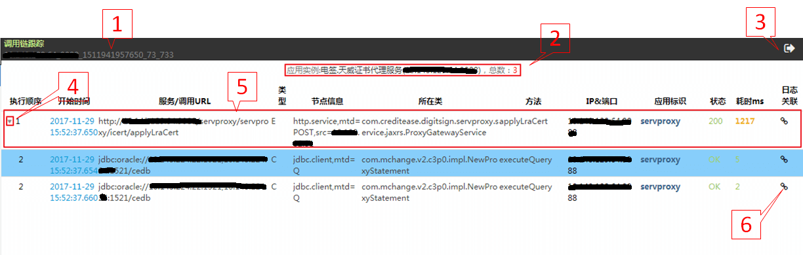

Invocation Chain Tracing
Invocation Chain Model Basics
Metadata:
- SpanEndpointType: invocation type (Root(“E”), Service(“S”), Client(“C”), Method(“M”));
- traceId: unique identifier of an invocation chain;
- spanId: invocation sequence of the current node in an invocation chain (unique when combined with SpanEndpointType)
- parentId: parent invocation node of the current node in an invocation chain.
Mapping rules:
- Register the initial invocation (without parent invocation) of the caller (service or web) as the starting node E and generate the unique traceID;
- Add “1” (“.1” to the first spanId) to the spanId for invocation among application components (such as httpclient and method invocation) within the system;
Span information of Service A and Service B differs in SpanEndpointType (each representing one end of the span) only for invocation among systems.

Note: Please use @FormParam annotations to obtain parameters at the server if your program employs jersey and propagate parameters via application/x-www-form-urlencoded. Otherwise, parameters cannot be obtained when heavyweight invocation chain is enabled.
Enable and Disable Invocation Chain Tracing
Enable or disable invocation chain tracing in the Invocation Chain Tracing interface.
Invocation Chain Tracing View
Click on [Invocation Chain Tracing] under UAV GodEye and get to the list view.

List View

1) Select an application instance. Drop-down boxes from left to right are for:
- Selecting an application cluster
- Selecting an application instance of an application cluster;
2) Search for invocation chain data during specified time intervals. Specify time with the same method as that of the application log query. From left to right:
- Time: [All] denotes total time;
- Time setting
- By the day: click on [All] to pop up the calendar and specify the date;
- By the hour: click on [All] to pop up the calendar and specify the date and the hour;
- By the minute: click on [All] to pop up the calendar and specify the date, the hour and the minute;
- Sort by: [Ascending] or [Descending]
 : clear the specified time back to [All]
: clear the specified time back to [All]
3) Keyword query
- Hover the curser over the keyword box to view the brief rules

 : click to search for the invocation chain information within the specified time intervals, or to search for the invocation chain information within the most recent 1 minute by default if no time is specified
: click to search for the invocation chain information within the specified time intervals, or to search for the invocation chain information within the most recent 1 minute by default if no time is specified : click to view the details and examples of the query functionality of invocation chains
: click to view the details and examples of the query functionality of invocation chainsIllustration of keyword query rules
- Query by
Service URLby default when entering the keyword in the query box - Query by
Statewhen prefixing the keyword with @ in the query box- For example, the keyword
@500in the query box indicates querying the invocation chains whose return state code is 500
- For example, the keyword
- Conduct federated query by connecting
Service URLandStatewith @- For example, the keyword
monitor@500in the query box indicates querying the invocation chains whoseService URLcontainsmonitorandStatecode is 500
- For example, the keyword
- Query by all fields in the format of
url="xx", state="xx". The key value before "=" is the query field. The query functionality currently supports parallel query byService URL,State,ClassandMethod. The value after "=" is the query keyword. The query functionality supports the multiple keyword query in Rule 5 and the fuzzy match query in Rule 6- For example,
url="montior", state="500 404", method="*query*"indicates querying the invocation chains whoseService URLcontainsmonitor,Statecode is500or404, andMethodcontainsquery
- For example,
- The query fiedls support multiple keywords query. Below are detailed rules:
- Support OR query by separating keywords with a space
- For example,
<kwd1> <kwd2>indicateseither kwd1 or kwd2
- For example,
- Support AND query by connecting all keywords with
+- For example,
<kwd1>+<kwd2>indicatesboth kwd1 and kwd2
- For example,
- Support the co-existence of a space and
+, with keywords connected by+being taken as a whole- For example,
<kwd1>+<kwd2> <kwd3> <kwd4>indicates theco-existence of kwd1 and kwd2 or kwd3 or kwd4
- For example,
- Support OR query by separating keywords with a space
- Prefix and suffix the keyword with * for fuzzy match
- For example,
\*monitor\*indicates that all invocation chains containingmonitorshall be matched
- For example,
Notes:
- All queried keywords shall be segmented when there is no * among keywords. Segmented keywords shall not be highlighted. Prefix and suffix the keywords with * for fuzzy match.
- The fuzzy match query supports AND query only, i.e. the keyword in the format of
*monitor*do not allow a space that connects another keyword after it for OR query
- Query by
4) Quick query buttons that support common query
- L1min: view service requests within the latest 1 minute;
- s100in1hr: view the slowest 100 service requests within the latest 1 hour;
- L100: view the latest 100 service requests within 24 hours;
- s100: view the slowest 100 service requests within 24 hours;
5) Display the application instance selected and the service request total;
6) Display the service invocation information. Click to view invocation chain details of the current invocation request;
- Staring time: the time when the service request starts;
- Service URL: URL address of the service;
- Node information: service type + local IP;
- Service class: the class to which the service belongs;
- Method: the way in which the service request is made;
- Status: Click to view status
OK for good; Err for error; Numbers for the status code of HTTP response; - Time consumed, in ms: time cost by this thread;
Invocation Chain Details

1) Invocation chain tracing: traceID: IP+port+timestamp+current threadID+atomic variant;
2) Application and port to which the service belongs plus the current service total;
3) Back to the list view of invocation chains;
4) Invocation chains belonging to the same service request are collapsable;
5) Display the details of the current invocation. Click to view the service invocation details;
- Execution sequence: the priority according to which services are executed;
- Staring time: the time when the service request starts;
- Service/tracing URL: indicates that the invocation is a service or URL;
- Type: E for Root: represents the general port of Span;
S for Service: represents server components of Span; C for Client: represents client components of Span; M for Method; - Node information: service type + local IP;
- Service class: class to which the service belongs;
- Method: the way in which the service or service request is made;
- IP & port: IP serial and port serial;
- Application label: application to which the service belongs;
- Status: Click to view status;
OK for good; Err for error; Numbers for HTTP response status code; - Time consumed, ms: time cost by this thread;
6) Invocation chain-log correlation;
Example of invocation chain details:
Take 电签.天威证书代理服务 as an example:
(7) SpanID;

Below is the detailed process of invocation chain tracing:

- The user (10.. . ) invokes Service A(http://: 8080/ccsp/ccsp/icert/apply ) and accesses application ccsp in 1020 ms ;
- Service A(ccsp) accesses jdbc.client and executes executeQuery;
- Service A(ccsp) invokes Service B (http:10._.*.8088) by sending sendPost via Apache.http.Client and accesses the application servproxy;
- Service B(servproxy) invokes three methods (001, 002 and 003). Be noted that method is secondary to service though displayed in the same class;
- Service B(servproxy) executes executeQuery and executeUpdate of jdbc.client twice respectively;
- Service B(servproxy) invokes Service C via apache.http.AsyncClient;
Service Invocation Details

1) Refresh the current page;
2) Invocation process details;
3) Service details;
4) Click here to view metadata details;
Metadata Details

1) Metadata
- spanID: invocation sequence of the current node in an invocation chain;
- Parentid: parent invocation node of the current node in an invocation chain;
2) Request header information 3) Request content: requested content, such as "中华人民大团结" shown in the picture; 4) Response header information 5) Response content: responded content,such as "中华人民大团结" shown in the picture;